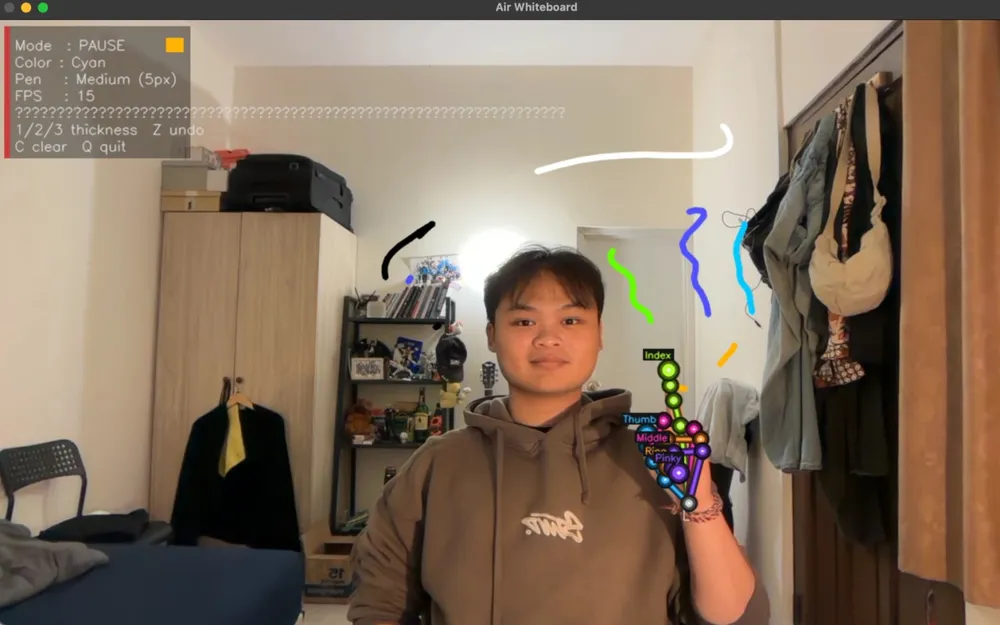
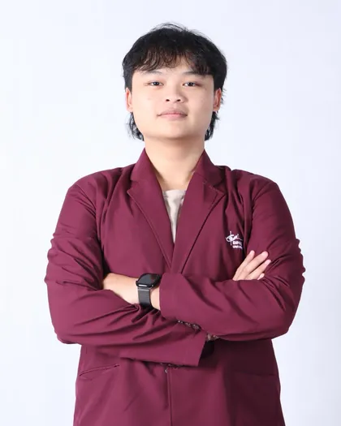

Computer Science · Bina Nusantara University · Semester 5
Huruf namanya bereaksi mengikuti kursor. Saat fokus, tombol panah kiri dan kanan melakukan hal yang sama.
Membangun software.
Mendalami keamanan aplikasi.
Mencari magang 6 atau 12 bulan di Application Security, Pentesting, atau Security Engineering.
Stikernya bisa digeser. Fokuskan lalu pakai tombol panah.
Karya & proyek
Dari ide
ke percobaan.
Saya tertarik melihat apa yang terjadi saat sebuah ide dipakai dalam kondisi nyata. Dua proyek pribadi, satu proyek kampus bersama tim lima orang. Ketiganya masih berjalan, dan tiap cerita menyebut batasnya.
Pribadi · prototipe
BISINDO Translator
Proses lokal yang bisa dimengerti.
Seberapa jauh isyarat tangan bisa dikenali tanpa mengirim gambar ke mana pun? BISINDO memakai dua tangan, jadi persoalannya bukan hanya bentuk, tetapi juga hubungan antar-tangan.
26 huruf dan 32 isyarat kata terpisah. Bukan penerjemah percakapan.
- 1KameraGambar masuk dari webcam.
- 2Titik sendiGambar diubah jadi koordinat sendi tangan.
- 3Model di perangkatInferensi berjalan di komputer sendiri.
- 4Huruf / kataKeluar sebagai huruf atau isyarat kata terpisah.
inferensi lokal Gambar kamera diproses untuk mengekstraksi titik sendi, lalu model menerima koordinatnya. Modelnya jadi lebih kecil dan seluruh inferensi berjalan di perangkat. Target pengembangan yang saya catat: macOS Apple Silicon.
- Python
- PyTorch
- MediaPipe
- PySide6
Baca studi kasus
Yang sudah berfungsi
- Mengenali 26 huruf statis dan 32 isyarat kata terpisah.
- Inferensi berjalan pada perangkat. Target pengembangan yang saya catat adalah macOS Apple Silicon.
Batas yang perlu diketahui
- Ini prototipe, bukan produk matang atau rilis publik yang sudah teruji luas.
- Evaluasi pada penutur baru belum dibuktikan secara terpisah. Pembagian data yang memakai penutur yang sama pada data latih dan validasi tidak membuktikan hasilnya bertahan untuk semua penutur, jadi saya tidak memasang angka akurasi di halaman ini.
- Pengenalan kalimat berkelanjutan dan perapian bahasa masih bagian dari pengembangan.
Yang saya pelajari
Memisahkan titik sendi dari gambar mentah membuat modelnya lebih kecil sekaligus membuat alasan privasinya mudah dijelaskan. Bagian tersulit justru bukan modelnya, melainkan jujur soal apa yang belum terbukti.
Status: prototipe. UI/UX dan fitur masih dikembangkan.
Pribadi · prototipe
PapanTulis (Boardly)
Satu bagian kecil yang bisa dicoba.
Papan tulis tanpa stylus dan tanpa tablet. Yang ada hanya webcam dan tangan. Gerakan tangan perlu di-smoothing dan dibedakan antara gerakan sengaja dan tidak, sebelum bisa dipakai menggambar atau presentasi.

Coba coretan kecil
Ilustrasi interaksi di halaman ini memakai pointer atau sentuhan. Bukan PapanTulis yang sedang berjalan, dan tidak memakai kamera.
- Python
- OpenCV
- MediaPipe
- NumPy
Baca studi kasus
Yang sudah berfungsi
- Input webcam dengan pelacakan tangan.
- Kontrol gestur untuk menggambar dan presentasi. Rincian ketujuh kontrol gestur ada di README repository.
- Perapian bentuk sederhana.
Batas yang perlu diketahui
- Hasilnya dipengaruhi pencahayaan, latar belakang, posisi tangan, smoothing, dan resolusi pemrosesan.
- Saya belum melakukan pengujian pengguna atau pengukuran performa yang bisa dipertanggungjawabkan, jadi tidak ada angka FPS atau klaim keberhasilan di halaman ini.
Yang saya pelajari
Pelacakan tangan hanya separuh persoalan. Bagian yang menentukan adalah smoothing dan ambang yang memutuskan kapan sebuah gerakan dihitung sebagai perintah.
Status: prototipe desktop. Fitur dan UI/UX masih dikembangkan.
Tentang
Teliti. Tuntas. Lintas bidang.

Saya tertarik memahami cara aplikasi bekerja, bagaimana kelemahannya muncul, dan bagaimana memperbaikinya.
Mahasiswa Computer Science semester 5 di Bina Nusantara University. Peminatan cybersecurity saya mulai pada semester 4.
Cara belajar saya praktik: membangun prototipe, memeriksa hasil, menerima masukan, lalu memperbaiki bagian yang belum tepat. Ketiga proyek di atas lahir dari cara itu.
Saya masih belajar, dan yang saya cari adalah tim yang lebih berpengalaman untuk tempat magang. Di bawah ini keputusan yang terlihat dari ketiga proyek itu.
Catatan dari prosesnya
-
Pisahkan observasi dari kesimpulan
Bot yang saya kerjakan membantu membaca indikator terkait UU PDP. Cookie yang teramati, indikator otomatis, dan tinjauan manusia punya fungsi berbeda, jadi ketiganya saya tampilkan terpisah.
Studi kasus Cookies Risk Analyzer -
Tentukan apa yang masuk ke model
Gambar kamera diproses menjadi landmark, lalu model mengenali huruf atau isyarat kata dari koordinat tersebut. Inferensi lokal dan cakupan kosakata perlu dijelaskan bersama, bukan salah satunya saja.
Studi kasus BISINDO Translator -
Periksa kondisi penggunaan
Pencahayaan, posisi tangan, smoothing, dan resolusi pemrosesan memengaruhi pengenalan gestur. Perilaku prototipe perlu dibaca bersama kondisi penggunaannya.
Studi kasus PapanTulis
Perkakas
Yang saya pakai
Daftar ini memisahkan yang sudah saya pakai di proyek nyata dari yang masih saya pelajari. Tidak ada bar persentase, karena angkanya tidak punya dasar.
Dipakai dalam proyek
- Python
- JavaScript
- React
- Node.js
- PyTorch
- MediaPipe
- OpenCV
- PySide6
- Docker
- Git
Sedang dipelajari
- OWASP MASVS
- Burp Suite
- Frida
- jadx
- Application security
- Pengujian keamanan aplikasi mobile
Logo berasal dari Simple Icons dengan lisensi CC0. Kredit dan catatan aset.
Perjalanan
Dari ruang kelas
ke kepanitiaan
Pendidikan, kepanitiaan, dan kegiatan yang membentuk cara saya bekerja.
Sedang berjalan
-
2024kini
S1 Computer Science
Bina Nusantara University, Jakarta
Semester 5. Peminatan cybersecurity sejak semester 4.
Bertanggal
-
2026
First Year Program Leader
Bina Nusantara University
Menjalankan orientasi fakultas bersama 22 Freshmen Leader dan 22 Freshmen Partner, sekaligus menjadi penghubung antara universitas dan tim mentor.
-
2025
Capture the Flag, IFEST UAJY
Peringkat 17 nasional
Soal web, kriptografi, dan reverse engineering.
Organisasi & sekolah
-
BNCC
Bina Nusantara Computer Club
Anggota
-
GDGoC
Google Developer Group on Campus
Anggota, BINUS Malang
-
KMH
Keluarga Mahasiswa Hindu
Digital branding
-
SMA
SMA Negeri 3 Denpasar
Jurusan IPA
Kontak
Mari membangun
sesuatu.
Kalau ada kesempatan magang 6 atau 12 bulan di Application Security, Pentesting, atau Security Engineering, saya senang mendengarnya. Saya juga terbuka untuk posisi Computer Science lain yang relevan.
calvinguscalvin@gmail.comKirim email Lihat CV (PDF) Unduh CV (PDF)
- GitHub
- github.com/CalvinWuz
- Domisili
- Jakarta, Indonesia